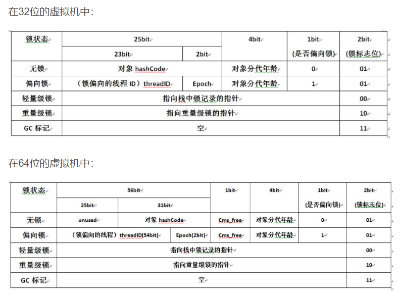
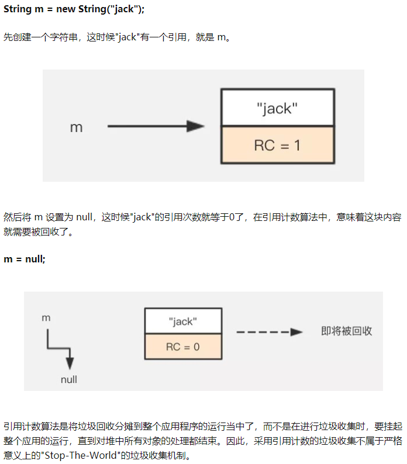
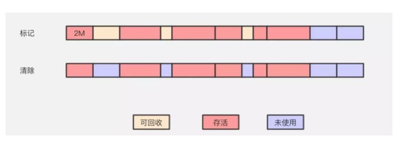

1.Java内存区域
1.1运行时数据区域
1.程序计数器 program counter register
线程私有
为什么是线程私有？
Java虚拟机的多线程是通过线程轮流切换并分配处理器执行时间的方式来实现，
也就是说，在同一时刻一个处理器内核只会执行一条线程，处理器切换线程时并不会记录上一个线程执行到哪个位置，所以为了线程切换后依然能恢复到原位，每条线程都需要有各自独立的程序计数器
主要作用是：
当前线程所执行的字节码的行号指示器（每个指令码前面都有一个行号，可以把它看作当前线程执行到某一行代码位置的一个标识）
字节码解释器工作时就是通过改变这个计数器的值来选取下一条需要执行的字节码指令
- 如果线程再执行java方法，记录正在执行的虚拟机字节码指令的地址；
- 如果执行Native方法，为空（Undefined)
是java内存规范中唯一没有规定任何 OutOfMemoryError 情况的区域
？为什么：程序计数器存储的是字节码文件的行号，而这个范围是可知晓的，在一开始分配内存时就可以分配一个绝对不会溢出的内存。
为什么执行Native方法，值为空？
Native方法大多是通过C实现并未编译成需要执行的字节码指令，也就不需要去存储字节码文件的行号了。
2.java虚拟机栈 JVM Stacks
线程私有，生命周期和线程相同
每个java方法被执行时都会创建一个栈帧（Stack Frame）
用于存储局部变量表、操作数栈、动态链接、方法出口等信息。
每个方法被调用到执行完成的过程，对应一个栈帧在虚拟机栈从入栈到出栈的过程
线程运行过程中，只有一个栈帧是处于活跃状态，称为“当前活跃栈帧”，当前活动栈帧始终是虚拟机栈的栈顶元素
局部变量表：
编译期已知的各种基本数据类型
对象引用
局部变量表所需的内存空间在编译期间完成分配，在运行期间不会改变
两种异常情况：
- 线程请求的栈深度大于虚拟机允许的深度，
StackOverFlowError - 如果虚拟机内存可以动态扩展，扩展时无法申请到足够的内存：
OutOfMemoryError
3.本地方法栈 Native Method Stacks
与JVM Stacks类似，私有
- java虚拟机栈 为java方法服务
- 本地方法栈 为虚拟机用到的Native方法服务
native方法：一个Native Method就是一个java调用非java代码的接口
在定义一个native method时，并不提供实现体（有些像定义一个java interface），因为其实现体是由非java语言在外面实现的
4.Java 堆 Java Heap
所有线程共享的一块内存区域，Java虚拟机启动时创建
用来存放对象实例：所有的对象实例和数组都要在堆上分配内存
堆可以处于物理上不连续的内存空间里，只要逻辑上连续
如果堆中没有内存进行实例分配或推无法再拓展时：OutOfMemoryError
字符串常量池
String Intern Pool， 在堆中（1.7后）
堆是GC管理的主要区域
新生代、老年代
新生代细分：Eden空间、【From空间、To空间】
【Survivor空间】
5.方法区 Method Area
线程共享区域
存储已被JVM加载的类信息、静态变量、常量、即时编译器编译后的代码
方法区无法满足内存分配需求时：OutOfMemoryError
JDK 1.8后，改为元空间 Metaspace
Mataspace：实际上是本地内存
Klass Metaspace:就是用来存klass的，klass是我们熟知的class文件在jvm里的运行时数据结构
（A.class其实是存在heap里的，是java.lang.Class的一个对象实例）
NoKlass Metaspace:专门来存klass相关的其他的内容，比如method，constantPool等
6.运行时常量池 Runtime Constant Pool
方法区的一部分
Class文件除了类的版本、字段、方法、接口等描述信息外，还有一项是常量池，用来存放编译期生成的各种字面量和符号引用，这部分在类加载后存放在方法区的运行时常量池中。
7.直接内存 Direct Merory
不是虚拟机运行时数据区的一部分，也不是《Java虚拟机规范》中定义的内存区域。
直接内存是在 Java 堆外的、直接向系统申请的内存区间。
来源于NIO（New Input/Output)类，使用Native函数库直接分配堆外内存，然后通过存储在Java堆中的DirectByteBuffer对象作为这块内存的引用进行操作
通常，访问直接内存的速度会优于 Java 堆。即读写性能高。
- 因此出于性能考虑，读写频繁的场合可能会考虑使用直接内存。
- Java 的 NIO 库允许 Java 程序使用直接内存，用于数据缓冲区
使用下列代码，直接分配本地内存空间：
xxxxxxxxxxint BUFFER = 1024 * 1024 * 1024; // 1GBByteBuffer byteBuffer = ByteBuffer.allocateDirect(BUFFER);
1.2 堆和栈的区别
内存分配
栈：物理地址分配是连续的。所以性能快
栈是连续的，所以分配的内存大小要在
编译期就确认，大小是固定的。堆：物理地址分配对对象是不连续的。因此性能慢些。在GC的时候也要考虑到不连续的分配，所以有各种算法
所以分配的内存是在
运行期确认的，因此大小不固定。
存放的内容
- 栈：存放局部变量和方法调用
- 堆：存放对象
可见性
- 栈：线程私有
- 堆：线程公有
异常
栈：线程请求的栈深度大于虚拟机允许的深度，
StackOverFlowError如果虚拟机内存可以动态扩展，扩展时无法申请到足够的内存：
OutOfMemoryError堆：如果堆中没有内存进行实例分配或推无法再拓展时：
OutOfMemoryError
1.3 对象访问 （例子）
对于代码
xxxxxxxxxxObject obj = new Object();假设这段代码出现在方法体里
Object obj这部分的语义会被反应到JVM栈的局部变量表里，作为一个reference类型数据出现
new Object()这部分的语义会反映到Java堆里，形成一块存储了Object类型所有实例数据值的结构化内存
Blog: 小白都能看得懂的Java虚拟机内存模型 这个写的太好了！
配合代码看：
xxxxxxxxxxpublic class Math { public static int initData = 666; public static User user = new User(); public int compute() { int a = 1; int b = 2; int c = (a+b) * 10; return c; } public static void main(String[] args) { Math math = new Math(); math.compute(); System.out.println("test"); }}（1）Java方法栈

执行main方法中的第一行代码是，栈中会分配main()方法的栈帧，并存储math局部变量，接着执行compute()方法，那么栈又会分配compute()的栈帧区域。
（2）栈帧
- 局部变量表
- 操作数栈
- 动态链接
- 方法出口
使用javap -c命令将class文件反编译并输出到TXT文件中
其中的compute（）方法：
xxxxxxxxxx public int compute(); Code: 0: iconst_1 1: istore_1 2: iconst_2 3: istore_2 4: iload_1 5: iload_2 6: iadd 7: bipush 10 9: imul 10: istore_3 11: iload_3 12: ireturn0：iconst_1：将1压入操作数栈
1: istore_1：局部变量1，在我们代码中也就是第一个局部变量a，先给a在局部变量表中分配内存，然后将int类型的值，也就是目前唯一的一个1存入局部变量a
2: iconst_2：将int类型常量2压入操作数栈
3: istore_2：将int类型值存入局部变量2
4: iload_1
5: iload_2
将局部变量1和2，也就是a和b的值装载到操作数栈中

6: iadd ：执行int类型的加法：iadd指令一执行，会将操作数栈中的1和2依次从栈底弹出并相加，然后把运算结果3在压入操作数栈底。
7: bipush 10:将10压入栈
9: imul：执行int类型的乘法：将3和10弹栈，将结果30压入栈
10: istore_3：将int类型值存入局部变量3，将30存入局部变量3，也就是c
11: iload_3：从局部变量3中装载int类型值
12: ireturn：将操作数栈中的30返回
方法出口：储存了当前要回到的位置，那么当compute()方法执行完之后，会根据方法出口中存储的相关信息回到main()方法的相应位置。
main方法中的有一个局部变量：math，存储的是堆中math对象在堆中的内存地址
（3）方法区
方法区：元空间（MetaSpace）
存放 常量、静态变量、类元信息
x
public static int initData = 666;public static User user = new User();这个user静态变量放在方法区，new的User存在堆中
到这里我们就能意识到栈，堆，方法区之间都是有联系的。
（4）对象
对象在内存中的存储：
- 对象头
Header - 实例数据
Instance Data - 对齐填充
Padding
对象头
Mark Word：
用于存储对象自身的运行时数据，如哈希码、GC分代年龄、锁状态标志、线程持有的锁等
Klass Point
对象指向它的类元数据的指针，虚拟机通过这个指针来确定对象是那个类的实例
数组长度Length（对于数组对象）
实例数据
对象真正存储的有效信息，也是在程序代码中所定义的各种类型的字段内容。无论是从父类继承下来的，还是在子类中定义的，都需要记录起来。
对其填充
并不是必然存在的，也没有特别的含义，它仅仅起着占位符的作用。由于HotSpot VM的自动内存管理系统要求对象起始地址必须是8字节的整数倍，换句话说，就是对象的大小必须是8字节的整数倍。而对象头部分正好是8字节的倍数（1倍或者2倍），因此，当对象实例数据部分没有对齐时，就需要通过对齐填充来补全。

对象访问方式
怎么从栈中的reference找到堆中对象的具体地址？
使用句柄
堆中划分一块内存作为句柄池，reference存的是对象的句柄地址，而句柄中包含了对象实例数据和类型数据各自的具体地址信息
直接指针
reference存的直接就是对象地址
主要使用第二种，这里的到对象类型数据的指针也就是上面说的Klass point
（5）本地方法栈
例：
xxxxxxxxxxnew Thread().start();底层调用了一个start0()的方法
xxxxxxxxxxprivate native void start0();这个方法没有实现，但又不是接口，是使用native修饰的，是属于本地方法
（6）堆
新new出来的对象放在Eden区
一个程序只要在运行，那么就不会不停的new对象，那么总有一刻Eden区会放满，那么一旦Eden区被放满之后，虚拟机会干什么呢？没错，就是gc，不过这里的gc属于minor gc，就是垃圾收集，来收集垃圾对象并清理的，那么什么是垃圾对象呢？
一个对象没有指针指向它->垃圾对象
经过一次minor GC后，没有被清理的对象移到From区，同时GC分代年龄+1
第二次，新的对象又把Eden区放满了，那么又会执行minor gc，但是这次会连着From区一起gc，然后将Eden区和From区存活的对象都移到To区域，对象头中分代年龄都+1
这样再一次Eden区又满时，minor gc就是回收Eden区和To区域了，TEden区和To区域还活着的对象就会都移到From区。
也就是说，Survivor区中总有一块区域是空着的，存活的对象存放是在From区和To区轮流存放，也就是互相复制拷贝，这也就是垃圾回收算法中的复制-回收算法。
如果一个对象经历了一个限值15次gc的时候，就会移至老年代。那如果还没有到限值，From区或者To区域也放不下了，就会直接挪到老年代，这只是举例了两种常规规则，还有其他规则也是会把对象存放至老年代的。
老年代满了，会发生Full GC
xxxxxxxxxxpublic class HeapTest { byte[] a = new byte[1024*100]; public static void main(String[] args) throws InterruptedException { ArrayList<HeapTest> heapTest = new ArrayList<>(); while(true) { heapTest.add(new HeapTest()); Thread.sleep(10); } }}这段代码里，死循环往list里添加新new出来的对象，这时总会出现老年代满的情况，而新new出来的HeapTest对象都是在HeapList里的，会被这个局部变量引用，那么Full GC 没有垃圾对象可以回收，而内存又满了。则OutOfMemoryError,OOM
2.垃圾收集器与内存分配
Blog: 咱们从头到尾说一次 Java 垃圾回收
2.1对象已死？
堆中存放中Java世界中所有的对象实例，垃圾收集器在堆进行回收前，第一件事就是确定对象哪些死了，哪些活着
1.引用计数器法 Reference Counting
给对象添加一个引用计数器，每当有一个地方引用它时，计数器值就加1；当引用失效时，计数器值减1；任何时刻计数器都为0的对象就是不可能再被使用的

但是很难解决对象之间相互循环引用的问题
例：
xxxxxxxxxxpublic class ReferenceCountingGC {public Object instance;public ReferenceCountingGC(String name){}}public static void testGC(){ ReferenceCountingGC a = new ReferenceCountingGC(); //a:1 ReferenceCountingGC b = new ReferenceCountingGC(); //b:1 a.instance = b; // b:1+1=2 b.instance = a; // a:1+1=2 a = null; //a:2-1=1 b = null; //a:2-1=1}实际上这两个对象已经不能再被访问，但是它们相互引用着对方，导致它们的引用计数都不为0，于是GC无法回收它们。
2.根搜索算法 GC Roots Tracing
通过一系列名为GC Roots的对象作为起始点，从这些节点开始向下搜索，搜索走过的路径为引用链Reference Chain，当一个对象到GC Roots没有任何引用链相连（图论的角度：不可达），则此对象是不可用的。
可作为 GC roots 的对象
- JVM栈（栈帧中本地变量表）中引用的对象
- 方法区中类静态属性引用的对象
- 方法区中常量引用的对象
- 本地方法栈中JNI（即一般说的Native方法）引用的对象
- 被同步锁持有的对象

3.引用
引用分类，强度逐渐减弱：
强引用 Strong Reference
类似
Object obj = new Object()这类的引用。只要强引用还存在，GC就不会回收被引用的对象软引用 Soft Reference
描述一些还有用，但非必需的对象。对于软引用关联的对象，在系统将要发生内存溢出风险前，把这些对象列入回收范围进行二次回收。若这次回收仍无足够内存，抛出内存溢出异常
弱引用 Weak Reference
描述非必需对象，强度更弱。被弱引用关联的对象只能生存到下一次GC发生之前。
虚引用 Phantom Reference
最弱。一个对象是否有虚引用的存在，不会对其生存时间构成影响，也无法用虚引用取得一个对象实例。设置虚引用的唯一目的是希望这个对象被GC回收时收到一个系统通知。
只用强引用才会导致内存泄露 Memory Leak
4.finalize() 方法的两次标记过程
进行根搜索后，如果没有与GC roots相连的引用链，第一次标记并筛选：
有必要执行finalize():
- 对象覆盖了
finalize()方法 finalize()方法没有被JVM调用过
则对象被放在一个名为 F-QUEUE 的队列中，由JVM自动生成的、低优先级的Finalizer线程去执行，这里的执行是指，这个方法会被触发，但不一定会等它运行结束（如果一个对象在finalize()方法里执行缓慢或发生了死循环，那么会导致F-QUEUE 里的其他对象永久处于等待中，甚至导致GC崩溃）
在执行finalize()方法时，对象如果能够重新建立连接，那么该对象将摆脱这次回收，如果该对象没有重新建立连接，那么对该对象进行二次标记。二次标记的对象进行回收。
JDK 1.8以上的版本此方法被遗弃
2.2 垃圾收集算法
1.标记-清除算法 Mark-Sweep
最基础的收集算法（后面的都是基于此思路并对缺点改进而来）
对内存中的对象进行标记，属于可回收的就标记起来，然后进行清理，清理后的区域就变成未使用的内存区域

主要缺点：
- 效率问题：标记和清除的效率都不高
- 空间问题：标记清除后会有大量的不连续的内存碎片，可能会导致：后续运行时若是分配较大对象时而无法找到足够的连续内存而不得不提前触发另一次垃圾收集动作
2.复制算法 Copying
将可用内存按容量划分为大小相等的两块，每次只使用其中的一块。当这一块的内存用完了，就将还存活着的对象复制到另外一块上面，然后再把已使用过的内存空间一次清理掉。保证了内存的连续可用，内存分配时也就不用考虑内存碎片等复杂情况，逻辑清晰，运行高效
但是代价是：内存缩小为以前的一半
现在的商业虚拟机都使用这种收集算法来回收新生代
3.标记 - 整理算法 Mark-Compact
标记过程和标记-清除算法相同，后续步骤而是让所有存活的对象都向一端移动，再清理掉端边界以外的内存区域
标记整理算法一方面在标记-清除算法上做了升级，解决了内存碎片的问题，也规避了复制算法只能利用一半内存区域的弊端。看起来很美好，但从上图可以看到，它对内存变动更频繁，需要整理所有存活对象的引用地址，在效率上比复制算法要差很多。
4.分代收集算法 Generational Collection
根据对象的存活周期的不同将内存分为几块
一般分为新生代和老年代
新生代中，每次收集都要大量对象死去，少量存活，故使用复制算法，只需付出少量存活对象的复制成本就可完成收集
老年代中，对象存活率高、没有额外空间对它进行分配担保，故使用 Mark-Sweep 或 Mark-Compact 进行回收
2.3 垃圾回收器
回收算法是方法论，垃圾收集器是垃圾回收的具体实现
新生代收集器
SerialParNewParallel Scvange
老年代收集器
Serial OldParallel OldCMS
对于整个Java堆
G1收集器
1.Serial 收集器
新生代，复制算法
单线程收集器：在进行垃圾收集时，必须暂停其他的工作线程
优点：简单高效（没有线程交互的开销）
Serial 收集器依然是虚拟机运行在Client 模式下默认新生代收集器
2.ParNew 收集器
新生代，复制算法
Serial 收集器的多线程版本
多线程并行
除了使用多线程进行垃圾收集之外，其余行为包括Serial收集器可用的所有控制参数、收集算法、Stop The World、对象分配规则、回收策略等都与Serial 收集器完全一样。
这里：
- 并行 Parallel：多条垃圾收集线程并行工作，用户线程仍处于等待
- 并发 Concurrent：用户和垃圾收集线程同时执行（不一定并行，可能是交替执行）
3.Parallel Scavenge 收集器
新生代，复制算法
多线程并行
吞吐量 Throughput ：CPU用于运行用户代码和总消耗时间的比值
该收集器目标：达到一个可控制的吞吐量
吞吐量优先：追求高吞吐量，高效利用 CPU 主要适合在后台运算而不需要太多交互的任务。
有两个参数用于精确控制吞吐量
- -XX: MaxGCPauseMillis 控制最大垃圾收集停顿时间
- -XX: GCTimeRatio 控制吞吐量大小
4.SerialOld 收集器
老年代，标记-整理算法
Serial Old是Serial收集器的老年代版本，它同样是一个单线程(串行)收集器
这个收集器的主要意义也是在于给Client模式下的虚拟机使用。
如果在Server模式下，主要两大用途：
（1）在JDK1.5以及之前的版本中与Parallel Scavenge收集器搭配使用
（2）作为CMS收集器的后备预案，在并发收集发生Concurrent Mode Failure时使用
5.Parallel Old 收集器
老年代，标记-整理算法
多线程并行
Parallel Old 是Parallel Scavenge收集器的老年代版本，
这个收集器在1.6中才开始提供。
6.CMS 收集器 Concurrent Mark Sweep
标记-清除算法
是一种以获取最短回收停顿时间为目标的收集器。适用于重视响应时间的应用场景
分为四个步骤
- 初始标记 CMS Initial mark
- 并发标记 CMS concurrent mark
- 重新标记 CMS remark
- 并发清除 CMS concurrent sweep
初始标记、重新标记仍需要Stop The World
- 初始标记：标记GC Roots能直接关联到的对象
- 并发标记：GC Roots Tracing过程（时间最长）
- 重新标记：修正并发标记期间，因用户程序继续运行而导致标记产生改变的那一部分对象的标记（比初始标记时间稍长，远比并发标记短）
- 并发清除
在耗时最长的并发标记和并发清除过程中，收集器线程和用户线程一起工作
优点：并发收集、低停顿
缺点：
对CPU资源敏感
并发过程中，不导致用户线程停顿，但是占用了一部分线程（CPU资源）导致总吞吐量降低
CMS默认开启的回收线程数是（CPU数量+3）/4。CPU数量低于4个时，影响较大
无法处理浮动垃圾
CMS并发清理阶段用户线程还在运行，还有新的垃圾产生，只能等下次GC时清理，所以要预留足够内存空间给用户线程使用，不像其他收集器是等到老年代几乎全满才收集
-XX: CMSInitiatingOccupancyFraction 设置进行回收时的垃圾空间占比
要是预留的内存无法满足程序需要，会导致Concurrent Mode Failure，这时临时启用SerialOld 来进行老年代的垃圾收集
产生大量空间碎片
-XX: +UseCMSCompactAtFullCollection 开关 FullGC 后进行碎片整理，整理过程无法并发
因为会标记-清除产生大量的内存碎片，不适合新生代
在G1提出之前，经典的垃圾收集器主要有三种类型：串行收集器、并行收集器和并发标记清除收集器，这三种收集器分别可以是满足Java应用三种不同的需求：内存占用及并发开销最小化、应用吞吐量最大化和应用GC暂停时间最小化，但是，上述三种垃圾收集器都有几个共同的问题：（1）所有针对老年代的操作必须扫描整个老年代空间；（2）年轻地和老年代是独立的连续的内存块，必须先决定年轻代和老年代在虚拟地址空间的位置
7.G1收集器 Garbage First
G1是一种服务端应用使用的垃圾收集器，目标是用在多核、大内存的机器上，它在大多数情况下可以实现指定的GC暂停时间，同时还能保持较高的吞吐量
G1将整个堆分成相同大小的分区（Region）
cms相对于g1来说，g1实现更加复杂，如卡表，卡表维护，同样的程序使用g1会比cms多消耗20%的内存和额外的执行负载。第二：选择收集器三大指标：延迟，吞吐量，内存占用。内存占用就不说了，再来说一下延迟，cms是标记-清除算法，想想就明白了，标记了直接清除掉就ok，g1是标记-整理，每次清除都需要整理，所以说cms更加适用在B/S系统中，但是cms标记-清除带来的缺点就是产生内存碎片，不过可以通过jvm参数实现当达到一定数量的内存碎片进行一次整理。关于浮动垃圾，可以预留内存空间供用户线程使用。相对于g1来说，jdk官方推荐，region分区、可预测停顿模型、按收益动态确定回收集。所以说cms目前在很多大厂都有在使用的，就笔者经验来看：在小内存4G左右且应用响应优先cms优于g1，在大内存8G应用g1有更大的优势，以及ZGC则应用于更大内存应用中
2.4内存分配和回收策略
1.对象优先在Eden分配
当Eden没有足够空间进行分配时，进行Minor GC
2.大对象直接进入老年代
对于需要大量连续内存空间的Java对象
这样是为了避免在Eden和两个Survivor之间发生大量的内存拷贝（新生区使用复制算法）
3.长期存活的对象进入老年代
虚拟机给每个对象定义一个对象年龄计数器
在Eden经过一个Minor GC后，仍存活并被Survivor容纳时，被移动到Survivor区，对象年龄为1.
之后每熬过一次Minor GC，年龄加1。
到了一定程度（默认15岁），进入老年代
4.动态对象年龄判定
如果在Survivor区中相同年龄所有对象大小的总和大于Survivor空间的一半，年龄大于或等于该年龄的对象可以直接进入老年代，无须等到默认年龄
5.空间分配担保
新生代使用复制分配算法，需要Survivor中的其中一个进行轮换备份
但是有大量对象在Minor GC后仍然存活的话，就需要老年代进行分配担保，让Survivor无法容纳 的对象直接进入老年代
Survivor区的存在意义就是减少送往老年代的对象，减少Major GC的发生
两个区以适应复制算法，解决内存碎片化的问题
3.虚拟机执行子系统
实现语言无关性：虚拟机和字节码存储格式
3.1 类文件结构
Class 文件是一组以8位字节位为基础的二进制流
Class文件是一种伪结构：无符号数、表
无符号数：
u1、u2、u4、u8： 1个、2个、4个、8个字节的无符号数
表：
由许多无符号数和其他表作为数据项构成的复合数据结构，以 “_info” 结尾
整个Class文件本质上就是一张表
1.魔数和Class文件的版本
头4个字节是魔数，Magic Word，用于确定这个文件是否为一个能被虚拟机接受的Class文件
魔数后4个字节是Class文件的版本号，5、6：次版本号；7、8：主版本号
例：0x CA FE BA BE 00 00 00 32 ：主版本号50
2.常量池
常量池中的常量的数量是不固定的，入口处放一个u2的 constant_pool_count，代表常量池容量计数值
从1开始
例：00 16 即十进制的22，表示常量池中有21项常量，索引：1~21
常量池中主要存放：
字面量 Literal 、符号引用 Symbolic Reference
字面量
如文本字符串、被声明为final的常量值等
符号引用
- 类和接口的全限定名
- 字段的名称和描述符
- 方法的名称和描述符
虚拟机在加载Class文件时进行动态连接，故Class文件中不会保存各个方法和字段的最终内存布局信息。当虚拟机运行时，需要从常量池中获得对应的符号引用，再在类创建或运行时解析并翻译到具体的内存地址之中
3.访问标志
u2，识别一些类与接口 层次的访问信息
4.类索引、父类索引与接口索引集合
类索引、父类索引 u2；接口索引集合 u2类型数据的集合
类索引：用于确定这个类的全限定名
父类索引：除了Object类为0
接口索引集合 ：描述这个接口实现了哪些接口
索引为0说明没有引用
这里的索引指向常量池中的字符引用
5.字段表集合
6.方法表集合
7.属性表集合
3.2 虚拟机类加载机制
虚拟机如何加载 Class 文件？
类加载机制：虚拟机把描述类的数据从 Class 文件加载到内存，并对数据进行校验、转换解析和初始化，最终形成可被虚拟机直接使用的Java类型
动态加载，动态连接
加载、验证、准备、初始化、卸载这五个阶段顺序是确定的，但是解析不一定，有时可以在初始化之后再进行
有四种情况需要立即对类进行初始化：（主动引用：进行初始化）
1）遇到new、getstatic、putstatic、invokestatic这四条字节码指令时，若类没有初始化，则触发初始化
对应的场景：new一个对象、读取或设置一个类的静态字段（final修饰、已在编译期把结果常量池的静态字段除外）
2）用 java.lang.reflect 包中的方法对类进行发射调用时
3）初始化一个类时，其父类还没进行初始化，则先出发对其父类的初始化
4）虚拟机启动时，先进行主类的初始化（main方法所在的类）
不会发生类的初始化（被动引用）
1.加载
- 通过类的全限定名获取定义此类的二进制字节流
- 将这个字节流所代表的静态存储结构转化为方法区的运行时数据结构
- 在Java 堆里生成一个代表此类的Java.lang.Class 对象，作为方法区数据的访问入口
连接 Linking：
2.验证
文件格式验证
验证字节流是否符合Class文件格式规范，能否被虚拟机处理
语义验证（元数据验证）
字节码验证
数据流和控制流分析
上面语义验证后，这里主要检查方法题：例如：类型转化是否有效、会不会跳转到方法体以外的字节码指令上等
符号引用验证
3.准备
正式为类变量分配内存（static 修饰的）并设置类变量初始值（static final修饰的）
例：public static int value = 123 ：指分配内存，而初始值为默认零值0
public static final int value = 123：则在准备阶段直接初始化为123
4.解析
将常量池中的符号引用替换为直接引用的过程
符号引用：与虚拟机实现的内存布局无关，引用的目标不一定已经加载到内存中
直接引用：与虚拟机实现的的内存布局相关，引用的目标已经在内存中存在
5.初始化
clinit 方法：
将静态代码块合并起来，作为一个clinit方法，然后进行初始化
主要执行所有类变量的初始化和静态代码块
同时虚拟机会保证在子类初始化操作之前完成父类（接口除外，接口只有在直接使用到接口的静态属性时候才会初始化）的初始化。
3.3类加载器
Blog：老大难的 Java ClassLoader 再不理解就老了

1.类与类加载器
类加载器实现：通过一个类的全限定名来获取描述此类的二进制字节流
两个类只有类源于同一个Class文件且类加载器相同，才相同
每个 Class 对象的内部都有一个 classLoader 字段来标识自己是由哪个 ClassLoader 加载的。ClassLoader 就像一个容器，里面装了很多已经加载的 Class 对象。
延迟加载
JVM 运行并不是一次性加载所需要的全部类的，它是按需加载，也就是延迟加载。程序在运行的过程中会逐渐遇到很多不认识的新类，这时候就会调用 ClassLoader 来加载这些类。加载完成后就会将 Class 对象存在 ClassLoader 里面，下次就不需要重新加载了。
比如你在调用某个类的静态方法时，首先这个类肯定是需要被加载的，但是并不会触及这个类的实例字段，那么实例字段的类别 Class 就可以暂时不必去加载，但是它可能会加载静态字段相关的类别，因为静态方法会访问静态字段。而实例字段的类别需要等到你实例化对象的时候才可能会加载。
2.类加载器类型
BootStrap ClassLoader
启动类加载器（根加载器），C++实现，是虚拟机的一部分
负责加载核心类，如 <JAVA_HOME>\lib 目录中的，java.lang.,java.io.等
Extension ClassLoader
扩展类加载器，加载JVM扩展类，
如 <JAVA_HOME>\lib\ext 目录中的，Swing系列等等
AppClassLoader
系统类加载器，
会加载 Classpath 环境变量（用户类路径）里定义的路径中的 jar 包和目录
可以由 ClassLoader 类提供的静态方法 getSystemClassLoader() 得到
ClassLoader 传递性
程序在运行过程中，遇到了一个未知的类，它会选择哪个 ClassLoader 来加载它呢？
虚拟机的策略是使用调用者 Class 对象的 ClassLoader 来加载当前未知的类。何为调用者 Class 对象？就是在遇到这个未知的类时，虚拟机肯定正在运行一个方法调用（静态方法或者实例方法），这个方法挂在哪个类上面，那这个类就是调用者 Class 对象。前面我们提到每个 Class 对象里面都有一个 classLoader 属性记录了当前的类是由谁来加载的。
因为 ClassLoader 的传递性，所有延迟加载的类都会由初始调用 main 方法的这个 ClassLoader 全全负责，它就是 AppClassLoader。
2.双亲委派
AppClassLoader 只负责加载 Classpath 下面的类库，如果遇到没有加载的系统类库怎么办，AppClassLoader 必须将系统类库的加载工作交给 BootstrapClassLoader 和 ExtensionClassLoader 来做，这就是我们常说的「双亲委派」。
一个类加载器收到了类加载的请求，它自己不会去尝试加载这个类，而是交给父加载器去完成
每个 ClassLoader 对象内部都会有一个 parent 属性指向它的父加载器。
parent == null，表示其父加载器为根加载器（虚线）
自定义加载类
xclass ClassLoader { // 加载入口，定义了双亲委派规则 Class loadClass(String name) { // 是否已经加载了 Class t = this.findFromLoaded(name); if(t == null) { // 交给双亲 t = this.parent.loadClass(name) } if(t == null) { // 双亲都不行，只能靠自己了 t = this.findClass(name); } return t; } // 交给子类自己去实现 Class findClass(String name) { throw ClassNotFoundException(); } // 组装Class对象 Class defineClass(byte[] code, String name) { return buildClassFromCode(code, name); }}class CustomClassLoader extends ClassLoader { Class findClass(String name) { // 寻找字节码 byte[] code = findCodeFromSomewhere(name); // 组装Class对象 return this.defineClass(code, name); }}loadClass返回一个加载的Class方法：先看有没有加载，没有就交给parent，调用 parent.findClass 去加载，如果parent加载不了，就自己加载，使用自己的 findClass方法
findClassClassLoader 的 findClass() 方法是需要子类来覆盖的
不同的加载器将使用不同的逻辑来获取目标类的字节码。
defineClass将字节码转换成 Class 对象
自定义加载器不要轻易覆盖 loadClass 方法。否则可能会导致自定义加载器无法加载内置的核心类库。在使用自定义加载器时，要明确好它的父加载器是谁，将父加载器通过子类的构造器传入。如果父类加载器是 null，那就表示父加载器是「根加载器」
xxxxxxxxxx// ClassLoader 构造器protected ClassLoader(String name, ClassLoader parent);
Class.forName vs ClassLoader.loadClass
这两个方法都可以用来加载目标类，它们之间有一个小小的区别：
https://blog.csdn.net/attis_wong/article/details/83983021